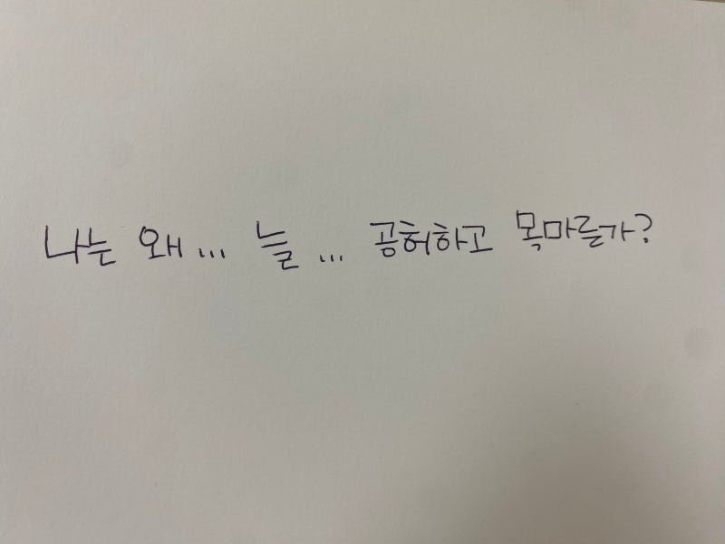
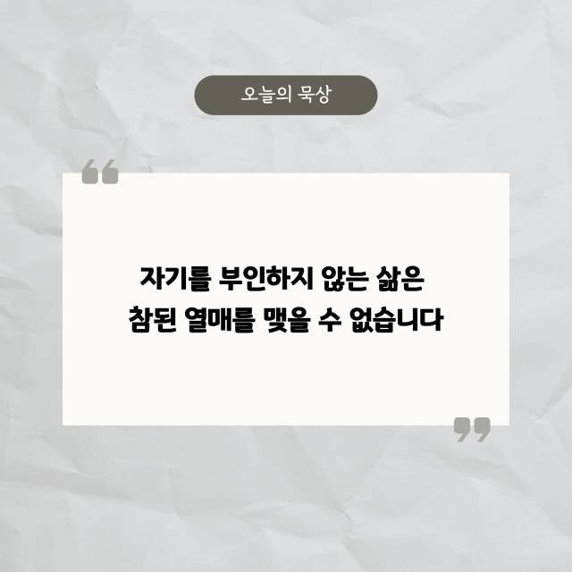

에세이
2026.07.23
진정한 성공의 의미, 남과 비교하지 않는 삶 (ft. 요셉의 형통, 영화 일일시호일)
우리는 어릴 때부터 남들보다 빨리, 높이 올라가는 것만이 정답이라고 배웠습니다. 하지만 우리가 그토록 쫓고 있는 그 성공이 과연 내 삶을 행복하...
읽기성경 이야기를 붙들고 써 내려간 삶과 신앙에 대한 목회자의 글입니다. 신앙의 메시지, 말씀 묵상, 삶의 에세이, 콘텐츠 속 신앙적 시선까지 4가지 결로 나눠 담았습니다.
총 20건의 글이 있습니다.
우리는 어릴 때부터 남들보다 빨리, 높이 올라가는 것만이 정답이라고 배웠습니다. 하지만 우리가 그토록 쫓고 있는 그 성공이 과연 내 삶을 행복하...
읽기
나는 왜 저 사람처럼 안 될까— 정체성의 혼란과 소명에 대하여 요즘 이런 생각 해본 적 있으신가요? "나는 왜 저 사람처럼 못하지?""나는 왜 ...
읽기
6월 12일 빌드업 교회에서는금요 성경공부 모임에서 나는 참포도나무다 — 요한복음 15장 1-3절의말씀을 읽어가며 생각하고 질문하며 답하는 시간...
읽기
기도했는데, 왜 아무것도 안 바뀐 것 같지? 여러분 기도해본 적 있을거에요? 간절하게, 진짜로. 시험 전날 밤이든, 관계가 무너지던 순간이든, ...
읽기
나는 괜찮은 사람일까?인간은 선한가, 인간은 능력이 있는가 — 성경은 무엇이라고 하는가 현대 사회는 끊임없이 말합니다. "당신은 충분히 괜찮은 ...
읽기우리가 진짜로 회복해야 할 것: 무가치함 가운데서 자신의 진짜 가치를 찾아가기 요즘 JTBC 드라마, <모두가 자신의 무가치함과 싸우고 있다>라...
읽기사람은 누군가가자신을 있는 그대로 담아줄 때비로소 자신의 가장 깊은 감정을마주할 수 있습니다 JTBC 드라마〈모두가 자신의 무가치함과싸우고 있다...
읽기요즘 결혼식장에는 주례사가 사라지고, 혼인 서약서에는 "아침밥은 꼭 차려주겠다"거나 "쓰레기는 내가 버리겠다"는 식의 귀여운 조항들이 들어간다....
읽기신앙생활을 오래 했음에도 불구하고, 문득 "내가 잘 믿고 있는 건가?" 하는 의문이 들 때가 있다....
읽기요즘 들어 부쩍 "세상이 미쳐 돌아가는 것 같다"는 말을 자주 듣는다. 옳고 그름의 기준은 사라졌고, 목소리 큰 사람이 이기는 것 같은 시대다....
읽기어제 다른 교회를 섬기는 한 성도님을 만났다. 커피가 식어가도록 대화를 나눴다. 한참 만에 털어놓은 그의 이야기는'신앙의 기쁨'이 아니라 '두려...
읽기
: 교회가 잃어버린 '공의'와 '은혜'의 기준 목회 현장이나 혹은 신앙 공동체 안에서 이런 딜레마를 마주할 때가 있다....
읽기빌드업 메시지 : 첫 번째 책 이야기 "어떻게 살아야 할까?" 혹시 길을 잃은 듯 막막한 기분, 느껴보신 적 있나요?아침에 눈을 떠 수십 개의 ...
읽기
제목 : 내 삶의 진짜 이야기: 나는 왜 늘 공허하고 목마른가? 2025년, 당신은 어떤 삶을 추구하고 있습니까? 지금 이 시대를 살아가는 우리...
읽기성경, 점과 선을 연결하는 4단계 독서법 (ft. 진짜 변화를 만드는 통합적 읽기) [부제 : 흩어진 지식을 삶을 바꾸는 지혜로 만드는 구체적인...
읽기
성경 어떻게 읽어야 할까요? 2편 성경이 어려운 3가지 진짜 이유 (ft. 조각난 그림을 맞추기 힘든 이유) 안녕하세요~!! '빌드업 메시지'입...
읽기성경 어떻게 읽어야 할까요? 1편 성경, 점이 아닌 선으로 읽어야 하는 이유 [부제 : 흩어진 구슬을 꿰어 보배로 만드는 성경 읽기 첫걸음] 안...
읽기
...
읽기
...
읽기
성경 전체를 꿰뚫는 하나의 열쇠, '언약' 혹시 성경을 읽으면서 창세기부터 요한계시록까지의 방대한 이야기가 어떻게 하나로 연결되는지 궁금했던 적...
읽기